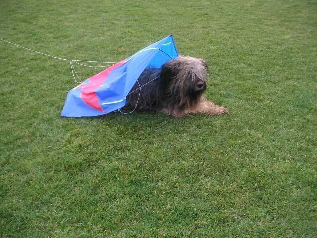
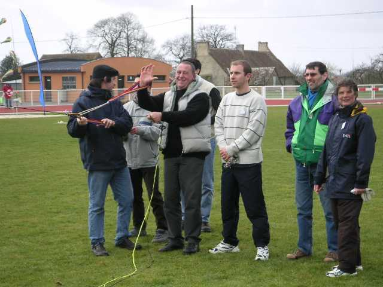
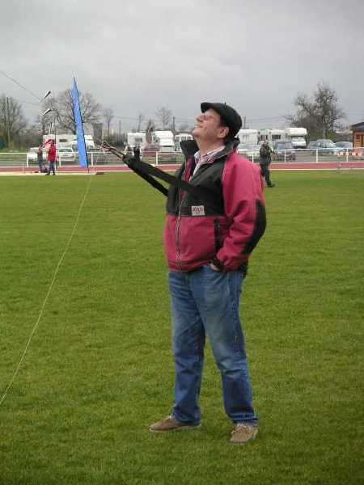
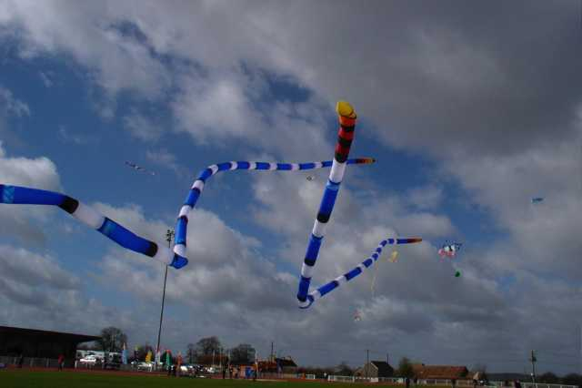
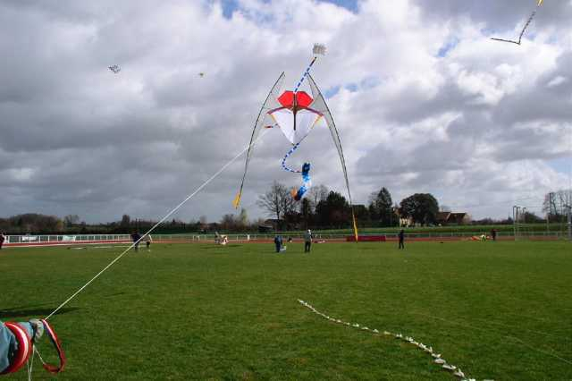
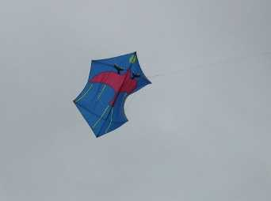
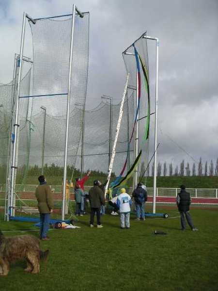
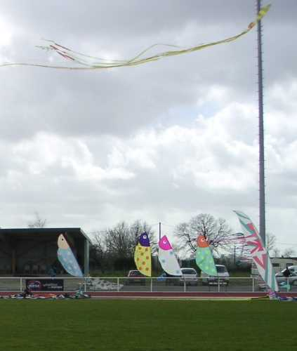
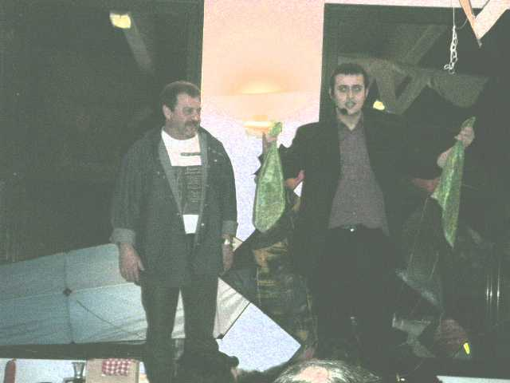
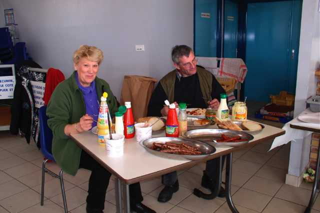

Le Mans 2004


Le Mans ? Vendredi, froid et vent. Samedi, froid et vent. Dimanche, froid et vent. Alors tout au long pareil ? NON, car Vendredi et Samedi il pleuvait. Je ne dis pas il a plu, je veux dire qu'il pleuvait, sans arrêt, quoi. Il valait mieux se trouver un toit étanche !
Mais Dimanche il a seulement plu. Pas énormément, il y a même eu de longs moments de beau temps. Déjà en se levant, grand ciel bleu; la journée commençait bien pour les lève-tôt !


Evidemment pour voler, il fallait avoir des cerfs-volants solides et surveiller car les mélanges étaient vite détonants... Pour les gros cerfs-volants, il valait mieux prévoir une équipe constituée.


On pouvait encore, pour les cerfs volants plus modestes, s'équiper en conséquence pour voler les mains dans les poches...


Il y en a pourtant eu en l'air, de beaux cerfs-volants, par exemple ceux de Michel Gressier avec des queues splendides.


Ou encore celui flambant neuf de Jean-Pierre et Marie-Hélène Schaefer sorti bien courageusement pour une inauguration !
Moi, je n'ai pas grand chose pour ce temps, mon Albatros commence à se déchirer de partout depuis 4 ans qu'il brave les tempêtes, il a quand même tenu l'air une demi-journée (bon, disons 2 heures, avant l'apéro du samedi, d'accord le festival n'était pas officiellement ouvert mais je le comptabilise quand même).


Ensuite j'ai monté mon Rokkaku de combat, mais il se posait souvent par planté de tête au terme d'un gracieux demi-cercle, la baguette centrale en a même traversé le dacron, à force. J'ai fini par lui mettre une queue faite avec un bout de ficelle et le sac d'un autre cerf-volant.
La minute éducative : quelques trucs pour la queue :
Pour qu'elle ait plus d'effet, l'attacher au centre d'une ficelle en V prise de chaque coté du CV. Ensuite mettre une ficelle intermédiaire assez longue, sinon la queue suit simplement les trajectoires du cerf-volant. Enfin mettre un émerillon, sinon ça tourne, s'enroule, et l'effet est de plus en plus faible (la queue se raccourcit, le V se ratatine, la poche de la queue peut même se twister et se fermer).
Enfin, mon rokkaku volait, pas stable, il fallait bien suivre les remous du vent et Dieu sait ! Mais il n'attaquait plus les taupes en piqué (sauf si des voisins venaient s'en mêler et s'emmêler).
D'ailleurs je n'étais pas le seul à avoir des problèmes, il y en a eu, des cerfs-volants coupés, et des sacs de noeuds, et des queues prises dans les accessoires que les égoïstes athlètes croient utile de mettre sur les stades :


Cages pour lanceurs de marteau, pleines de crochets pour tenir les filets, et plus hautes que les échelles honnêtes =>


<=réverbères avec plein de petits échelons crochus (4 queues dans l'un et une dans l'autre le dimanche soir, score honorable), tribune avec le bord de l'auvent coupant les lignes des petits malins qui croient cerf-voler à l'abri, etc.
Ça, c'était pour le cerf-volant pur et dur. Mais à part ça, ambiance extra. Déjà vendredi soir, accrochage des cerfs-volants dans la salle, vernissage et repas offert. Ça partait fort. Samedi matin, café, croissants etc. Samedi midi, on était censé apporter son repas, mais il y avait de quoi le compléter entre l'apéro, les gateaux et autres. Les autres repas ? Offerts aussi, et on avait vu large ! Même en prenant quatre gateaux, il en restait encore (comment je le sais ? euh? joker !). Et le pot de rillettes au p'tit blanc en surprise au départ ! Tout ça pour 10 Euros, eh ben !


Et j'allais oublier, samedi soir, illusioniste qui passait entre les tables, et qui ensuite a convoqué quelques spectateurs innocents (?) sur une estrade improvisée, Claude y a perdu sa culotte ! Très réussi.


Conclusion : on s'est bien amusé, merci Jean-Claude et Josette et toute l'équipe des Toiles du vent et les bénévoles qui s'ajoutaient, vous pourrez en remettre une couche l'année prochaine, s'il vous plaît ? Mais non, Josette, c'était pas raté, la météo, c'est qu'une circonstance.